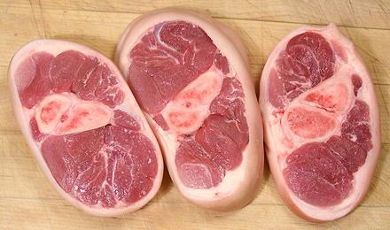
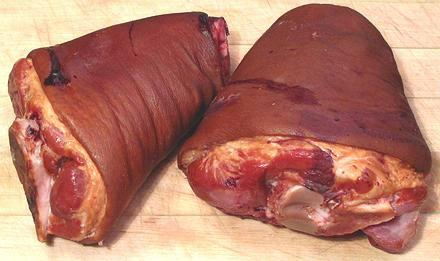

Pork Hocks

[#417 (shoulder) #417A (ham); Pig Knuckle (GB); Schweinhaxen, Eisbein
(German)]
This is simply the lower shank of the leg between the ham and the foot
(aft leg) or the shoulder and the foot (fore leg). It has much more meat and
much more fat than the foot, but the meat is tougher and with a lot more
connective tissue in it compared to the ham or shoulder.
In Europe the hock is commonly pickled in brine rather than left fresh.
In North America you'll generally have to do your own brining. In times
past beer bars in North America had big jars of vinegar pickled pork hocks
which were sold by the piece, but this practice was rapidly fading by the
1980s.
Buying:
Fresh hocks are now rare in chain supermarkets but
can easily be found in markets serving Asian or Mexican communities. Generally
they will be sliced about 1 inch thick as in the photo, but they can also
be had as part of a Long Foot. For
some European recipes you will need unsliced hocks - ask the meat man,
he can probably supply them uncut.
Prep:
Wash them to remove any saw debris. If your
recipe calls for them in chunks, the bones split very easily lengthwise by
driving a sharp Chinese cleaver knife through with a soft faced mallet.
Crosswise they are too hard for many knives, and cutting them this way will
produce bone chips, so have your meat man bandsaw them.
Salt Cure:
Central European recipes often require cured
but unsmoked hocks. You can do this by soaking (refrigerated) in a brine
made from 1/2 cup kosher salt (Morton) to each liter (it's European) of
water for 2 to 5 days. Use 1/2 Tablespoon per liter "Pink Salt"
(nitrite curing salt) for better color.
Cooking:
You'll need to simmer these for about 1-1/2 hours,
15 minutes longer if you are cooking whole hocks rather than slices.
More on Cuts of Pork.
Ham Hocks

[#561]
Ham Hocks are simply pork hocks that have been salt cured and
smoked fairly heavily. They are most often used as an ingredient in soups
and stews, generally with strongly flavored greens, particularly collard
greens, beans, blackeye peas, and the like.
Ham hocks vary greatly in size depending on how they are cut and
whether they are from a front leg or hind leg. The hocks shown in the
photo are typical but at the very large end of the size range. The one to
the right is 3 inches high, 5 inches wide and 6 inches long, weighing 1
pound 14-1/2 ounces. They are comonly between 9 ounces and 1 pound.
Buying:
Because of their prominent place in American
southern cuisine and "Soul Food" cooking, smoked hocks are still fairly
available in supermarkets, particularly in communities with a sizeable
black population.
Cooking:
These are tougher than fresh hocks. They will be
edible but still chewy in about 1-1/2 hours, but are often cooked until
the meat falls from the bones, which will take at least 3-1/2 hours. At
3 hours they are satisfactorily edible as a cold snack, not too chewy.
More on Smoked Pork Parts.
ap_hockz 101028 - www.clovegarden.com
©Andrew Grygus - agryg@clovegaden.com - Photos on this
page not otherwise credited are © cg1 -
Linking to and non-commercial use of this page permitted